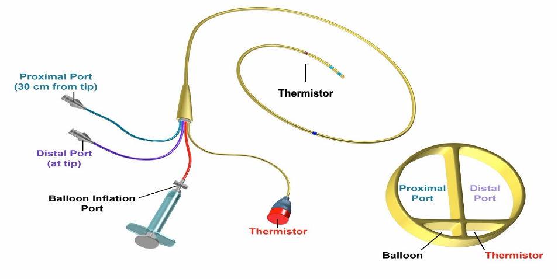
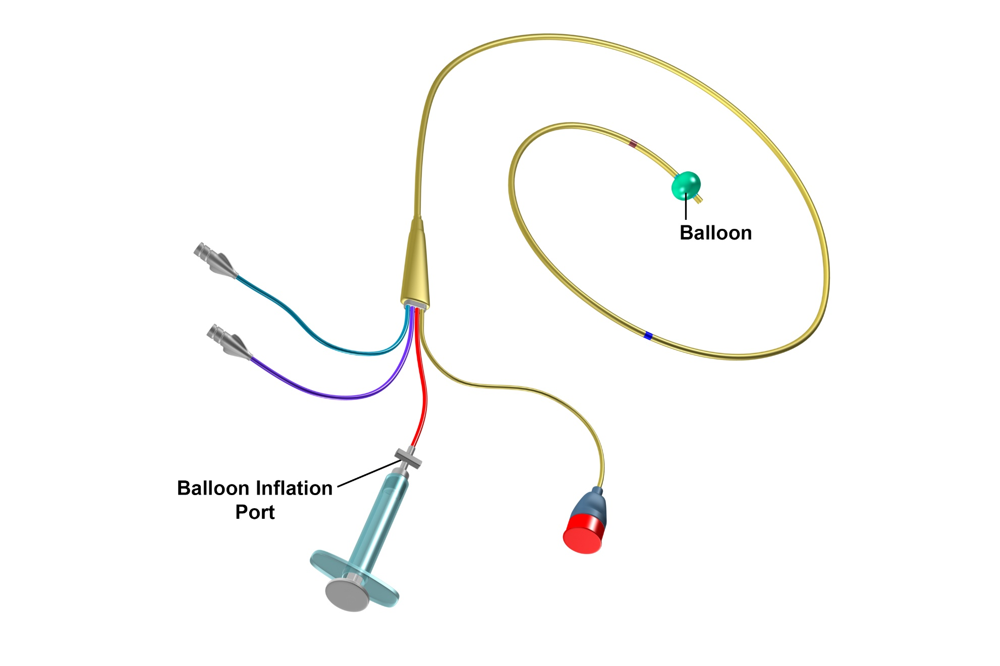
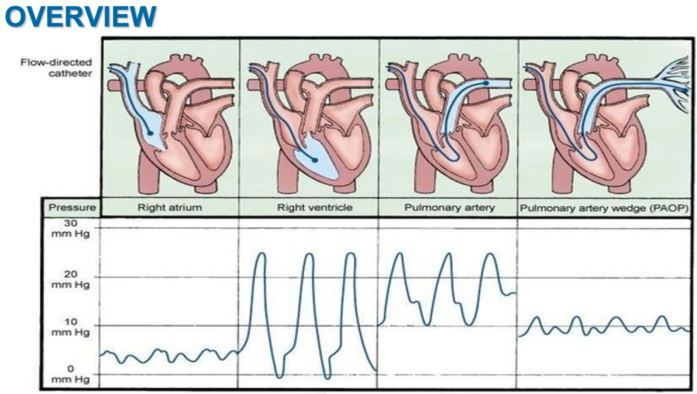

Module N7
The pulmonary artery catheter
Everything up to now has been about reading the circulation from the outside, with your eyes, your hands, and a bedside echo. That is enough for most patients. But some arrive undifferentiated, with shock that will not declare itself, or with findings so abnormal that the surface signs mislead. For them the pulmonary artery catheter, the Swan-Ganz, can offer significant information if used correctly. This is because it sits inside the circulation and reports the pressures and flows directly. This page is the map. It covers what the catheter is, when it earns the risk of putting one in, and then delves into four subtopics that will help you utilize the PA catheter appropriately and in the correct clinical setting.
What does the PA catheter do?
The PAC is a flow-directed, balloon-tipped catheter. Most are roughly 110 cm long and 7-Fr, advanced from a central vein in the neck, arm, or groin, through the right heart and into a pulmonary artery. There are several varieties of PA catheter, but the most commonly used one is a quadruple-lumen device that includes a distal (yellow) lumen which opens at the very tip in the pulmonary artery, a proximal (blue) lumen that sits about 30 cm back in the right atrium, a temperature-sensing thermistor that lies ~4 cm from the tip, and a small balloon at the tip which inflates with 1.5 ml of air. Once it is in place it delivers three kinds of information.


None of these numbers means anything without a reference range, and even the ranges are only a starting point, because shock is defined relative to a patient's own needs.
| Parameter | Normal range |
|---|---|
| Right atrial pressure (CVP) | 2 - 6 mmHg |
| Pulmonary artery pressure | 15 - 25 / 8 - 15 mmHg (mean 10 - 20) |
| Pulmonary artery occlusion (wedge) | 6 - 18 mmHg |
| Cardiac index | 2.5 - 4 L/min/m² |
| Systemic vascular resistance | 800 - 1200 dyne·s/cm&sup5; |
| Pulmonary vascular resistance | <250 dyne·s/cm&sup5; |
When it earns its risk
There is no single hard indication for a PAC. It earns its place in undifferentiated, multifactorial shock, especially when the echo windows are poor and the diagnosis is persistent and inconclusive. It is also useful to assess hemodynamics in patients with signs of right heart failure or pulmonary hypertension where it both characterizes the lesion and can follow the response to therapy. The PA catheter is frequently used during and after cardiothoracic surgery, and in separating cardiogenic from non-cardiogenic pulmonary edema. In every case, the utility has to be weighed against the need and evidence for its use. Inappropriate use can lead to false conclusions and misguided reassurance. For example, static filling pressures obtained from a PA catheter cannot predict fluid responsiveness, and its readings are only valid when the tip lies in a West zone III segment of lung. Randomized trials have not shown a benefit from PAC use. The largest, Sandham and colleagues in high-risk surgical patients, was neutral, as were PAC-Man and ESCAPE, and the ARDS Network FACTT trial found no survival or organ-function benefit alongside more complications in the catheter arm. Newer data suggests that in select cases, a strong case for PA catheter use can be made. That newer signal comes from contemporary observational and registry cohorts in cardiogenic shock, where catheter use is associated with lower mortality, and it has not yet been tested in a randomized trial. With echocardiography now everywhere and fewer clinicians practiced at insertion, the bar for reaching for a PA catheter should be justified.
Zone III is what a wedge measurement requires. When the balloon occludes a proximal branch, flow in that segment stops and the catheter tip looks downstream through a static column of blood toward the left atrium. The number on the monitor is left atrial pressure only if that column is continuous, which means only if every capillary between the tip and the pulmonary vein stays patent. In Zone I or Zone II the capillaries are compressed by alveolar pressure at some point in the cycle, the column is interrupted, and the transducer reports something closer to alveolar pressure than to left atrial pressure. Such a reading tracks airway pressure rather than left heart filling, so it rises with PEEP and stays high when the patient is volume depleted, exactly the situations in which a clinician most wants the wedge to be true. Flow-directed placement tends to carry the tip into the dependent, high-flow lung, and a supine patient makes most of the lung Zone III, but the conditions that shrink Zone III, high PEEP, hypovolemia, and a tip that has drifted into non-dependent lung, are the same conditions in which the wedge is most likely to mislead. This is why tip position is verified rather than assumed.

Contraindications to PA catheter use cluster around the right heart itself: a prosthetic or infected tricuspid or pulmonic valve, a right atrial or ventricular mass or thrombus, and active endocarditis. An existing left bundle branch block presents additional reason for caution, because floating the catheter commonly provokes a transient right bundle branch block and can therefore tip such a patient into complete heart block. The complication that governs your technique is pulmonary artery rupture. Inappropriate placement or inflation of the distal balloon can cause pulmonary artery rupture. Although the complication occurs rarely, mortality is as high as 30% when it occurs.
Reading it: the four-chamber walk
As the balloon carries the catheter forward, the distal port's waveform is your guide, and it changes character in each chamber. It is low and gently undulating in the right atrium, becomes tall and pulsatile with a low diastolic dip in the right ventricle, gains a dicrotic notch and a higher diastolic step-up in the pulmonary artery, and finally collapses into a small, atrial-looking tracing when the balloon occludes a branch and wedges. The key to proper bedside insertion is to ensure that depth and waveform agree at every step. When they do not, the catheter is coiling or misplaced.

The balloon at the distal tip of a PA catheter serves two purposes. The first is to assist in guiding the catheter tip around the natural curvature of the right atrium and into the pulmonary artery. Like a sail, the balloon is pushed along by blood flow moving from the right atrium to the right ventricle and then into the pulmonary artery. The second purpose for the balloon is to provide a pulmonary artery wedge, a maneuver where the balloon wedges itself in a pulmonary artery branch, briefly stopping the forward flow of blood through that vessel. With forward flow briefly stopped, a static column of blood forms between the balloon and the left atrium which allows the waveform from the left atrium to reflect back toward the PA catheter tip. Based on convention, pressures should be read and recorded at end-expiration, when intrathoracic pressure is closest to zero. In select cases, an averaged pressure across the entire respirophasic cycle is indicated. In these circumstances, the deviation from convention should be noted with the data. Flow can be recorded in one of two ways, either from thermodilution or from the Fick principle. When recording flow using the Fick principle, VO2 should optimally be directly measured using indirect calorimetry. When this is not available, estimates of VO2 can lead to erroneous assumptions in critically ill populations. In these cases, use of thermodilution technique to assess cardiac output should be considered.
Four topics, one path
The rest of this module breaks the catheter into four topics. Each carries its own page. Click on each topic to learn more.
Topic 1 - Indications, anatomy, and setup. When the catheter actually helps and when it does not, the hardware itself, and the setup that makes every later number trustworthy: zeroing the transducer to atmosphere, leveling it to the phlebostatic axis, and adjusting the monitor so the pressure scale and sweep speed let you see the respiratory swing.
Topic 2 - Insertion and troubleshooting. Check the balloon, orient the J-loop, and advance in steps, reading depth and waveform together, right atrium to right ventricle to pulmonary artery to wedge. Just as important is recognizing the overwedged or damped tracing and knowing that more than two failed blind attempts is the signal to escalate to fluoroscopy.
Topic 3 - Waveforms and wedging. Reading the right atrial a, c, and v waves and their descents, the right ventricular and pulmonary artery tracings, and the wedge waveform. Measure at the a-wave peak at end-expiration and identify the traps that result in erroneous wedge pressure readings: the wrong lung zone, PEEP, and the large v waves of mitral regurgitation.
Topic 4 - Cardiac output measurement. How to perform thermodilution correctly and the handful of things that corrupt it. Then the Fick method, and the situations where mixed venous saturation and Fick offer benefit and risk.
Work through the four topics in order below.
References
- Sandham JD, Hull RD, Brant RF, et al. A randomized, controlled trial of the use of pulmonary-artery catheters in high-risk surgical patients. N Engl J Med. 2003;348(1):5-14. doi:10.1056/NEJMoa021108.
- Wheeler AP, Bernard GR, Thompson BT, et al; National Heart, Lung, and Blood Institute Acute Respiratory Distress Syndrome (ARDS) Clinical Trials Network. Pulmonary-artery versus central venous catheter to guide treatment of acute lung injury. N Engl J Med. 2006;354(21):2213-2224. doi:10.1056/NEJMoa061895.
- Harvey S, Harrison DA, Singer M, et al. Assessment of the clinical effectiveness of pulmonary artery catheters in management of patients in intensive care (PAC-Man): a randomised controlled trial. Lancet. 2005;366(9484):472-477. doi:10.1016/S0140-6736(05)67061-4.
- Hoeper MM, Maier R, Tongers J, et al. Determination of cardiac output by the Fick method, thermodilution, and acetylene rebreathing in pulmonary hypertension. Am J Respir Crit Care Med. 1999;160(2):535-541. doi:10.1164/ajrccm.160.2.9811062.
- Garan AR, Kanwar M, Thayer KL, et al. Complete hemodynamic profiling with pulmonary artery catheters in cardiogenic shock is associated with lower in-hospital mortality. JACC Heart Fail. 2020;8(11):903-913. doi:10.1016/j.jchf.2020.08.012.
- Kanwar MK, Blumer V, Zhang Y, et al. Pulmonary artery catheter use and risk of in-hospital death in heart failure cardiogenic shock. J Card Fail. 2023;29(9):1234-1244. doi:10.1016/j.cardfail.2023.05.001.
- Bertaina M, Galluzzo A, Rossello X, et al. Prognostic implications of pulmonary artery catheter monitoring in patients with cardiogenic shock: a systematic review and meta-analysis of observational studies. J Crit Care. 2022;69:154024. doi:10.1016/j.jcrc.2022.154024.
- Ortega-Hernández JA, Chacon-Lozsan FJ, Baldetti L, et al. Pulmonary artery catheter monitoring in cardiogenic shock: a systematic review and meta-analysis. Shock. 2026;65(4):648-659. doi:10.1097/SHK.0000000000002784.